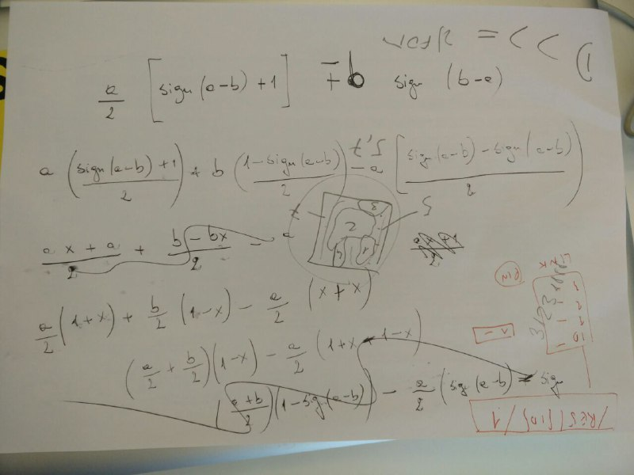
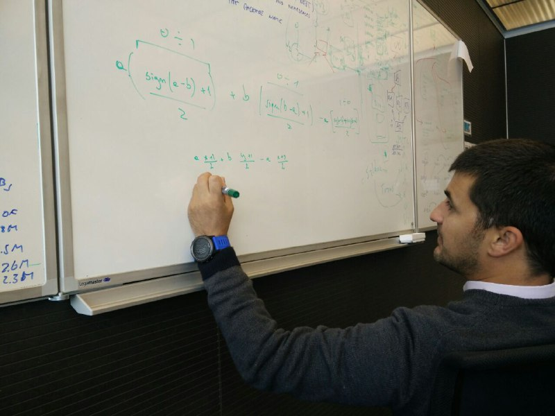

Trovare il maggiore di due numeri è banale:
public int Max(int a, int b)
{
return Math.Max(a, b);
}
oppure:
public int Max(int a, int b)
{
if(a >= b) return a;
else return b;
}
Ma riusciresti a farlo senza mai usare un comparatore? Niente >, <, ==, nessun if/then/else e nessuno switch!
Ecco il testo:
Write a function that takes 2 integers and returns the greater of them, or one of them if they are equal. You should not use comparators such as >, <, ==, Math.Max(), if, then, else, switch and the like. Example: Max(0, 0) => 0 Max(10, 0) => 10 Max(0, 10) => 10 Max(-1, 0) => 0 Max(-1, 1) => 1 Max(-10, -1) => -1
Vince l'approccio più originale.
Se vuoi pubblicare una soluzione, fai una pull request sul repository https://github.com/TicinoXP/code-games
Le nostre soluzioni
Emanuele
Emanuele ha trovato una soluzione che sfrutta il valore assoluto. Dal momento che:
| + a if a >= 0
|
|a| <
|
| - a if a < 0
Math.Abs() può essere sfruttato per realizzare un if/else. La sua soluzione è super concisa, e funziona sia con i numeri positivi che con quelli negativi:
public int Max(int a, int b) => (a + b + Math.Abs(a - b) ) /2;
Stefano
A chi dovesse storcere la bocca all'idea di usare l'if/else nascosto dentro il valore assoluto piacerà l'enhancement proposto da Stefano: usare la radice del quadrato come alternativa al valore assoluto, che porta a questa soluzione:
public int Max(int a, int b) => (a + b + Math.Sqrt(Math.Pow(a - b, 2))) / 2 ;
Raffaele
Anche Raffaele ha trovato il modo di evitare l'uso del valore assoluto, e ha sfruttato il calcolo del segno di un'espressione. La sua soluzione è qui
Era partito da questa formula:
public static void comparator(int a, int b) {
return (a / 2) * (Math.signum(a - b) + 1) + b * Math.signum(b - a);
}
ma poi, rendendosi conto che non funzionava nel caso in cui a e b fossero uguali, l'ha elaborata così:
 Tradotta in Java:
public int comparator(int a, int b) {
return (int)
(a * (Math.signum(a - b) + 1) / 2 +
b * (Math.signum(b - a) + 1) / 2 -
(Math.signum(a - b) + Math.signum(b - a)) / 2);
}
che, opportunamente semplificata, è diventata:
public int comparator(int a, int b) {
return (int) (a + b + Math.signum(a - b) * (a - b)) /2;
}
Leonardo
La soluzione di Leonardo sfrutta invece un trucco completamente diverso:
public int Max(int number1, int number2)
{
try
{
var result = number1 - number2;
Convert.ToUInt32(result);
return number1;
}
catch
{
return number2;
}
}
Un applauso per la fantasia!!!
Giuseppe Lombardi
Un'altra soluzione davvero astuta e fantasiosa la propone Giuseppe: se si accodano in un array a ripetuto a volte e b ripetuto b volte, l'elemento al centro dell'array sarà il maggiore:
a = 7
b = 4
0 1 2 3 4 5 6 7 8
=============================================
| 7 | 7 | 7 | 7 | 7 | 7 | 7 | 4 | 4 | 4 | 4 |
=============================================
^
centro
Non è geniale?
Il codice è:
public short Max(short a, short b)
{
var list = new List<uint>();
var uintA = (ushort)(short.MaxValue + a);
for (var i = 0; i < uintA; i++)
list.Add(uintA);
var uintB = (ushort)(short.MaxValue + b);
for (var i = 0; i < uintB; i++)
list.Add(uintB);
return (short)(list[((uintA + uintB) / 2)] - short.MaxValue);
}
L'uso di short.MaxValue è un altro trucco furbo per fare in modo che l'agoritmo funzioni anche con i numeri negativi: sommando ai valori in ingresso short.MaxValue si traslano tutti i casi nel dominio dei numeri positivi.
Arialdo
Esiste una piccola variante della soluzione di Giuseppe: si inseriscono in un array a volte a e b volte b, e poi si estraggono b elementi da sinistra; il successivo contiene il max:
a = 7
b = 4
0 1 2 3 4 5 6 7 8
=============================================
| 7 | 7 | 7 | 7 | 7 | 7 | 7 | 4 | 4 | 4 | 4 |
=============================================
<----------- a ------------><------ b ----->
<------ b -----> ^
max
Questa versione ha il vantaggio di poter essere implementata con una singola espressione LINQ:
public int Max(int a, int b)
{
return Enumerable.Repeat(a, a).Concat(Enumerable.Repeat(b, b).Skip(b).ToList()[0];
}
Arialdo ha trovato un secondo approccio, molto più convoluto e prolisso, e molto meno efficiente. L'idea è sfruttare il confronto tra bit e una funzione ricorsiva.
Si prendono i due numeri e li si traducono in binario:
a = 1 1 0 1 0 1 0 1 0 1 b = 1 1 1 0 0 1 1
Si aggiungono all'occorrenza dei trailing 0:
a = 1 1 0 1 0 1 0 1 0 1 b = 0 0 0 1 1 1 0 0 1 1
e si iniziano a confrontare i bit partendo da quelli più significativi: se un numero ha il bit a 1 mentre l'altro lo ha a 0, è facile capire quale dei due sia maggiore:
public bool IsBigger(bool a, bool b) => a && !b;
Se i due bit sono uguali
public bool AreEqual(bool a, bool b) => a && b || (!a && !b);
si deve procedere ricorsivamente.
Il problema della ricorsione è che ha bisogno di valutare la condizione di uscita, altrimenti non terminerebbe mai. Mentre è facile calcolare la condizione di uscita (non devono esserci altri numeri da valutare):
public static bool ThereAreOtherItems(List<bool> ab) => ToBoolean(ab.Count());
è un po' più difficile valutarla, perché richiederebbe un if. Il trucco è sfruttare la short-circuit evaluation degli operatori booleani: in pratica, in un or il secondo elemento non viene valutato se il primo è già true. L'algoritmo che ne risulta è:
public bool AIsBigger(List<bool> ab, List<bool> bb)
{
var headA = ab.First();
var headB = bb.First();
var tailA = ab.Skip(1).ToList();
var tailB = bb.Skip(1).ToList();
var aIsBigger = IsBigger(headA, headB);
var areEqual = AreEqual(headA, headB);
var thereAreOtherItems = ThereAreOtherItems(tailA);
return
(
aIsBigger
)
||
(
areEqual
&&
(
(thereAreOtherItems && AIsBigger(tailA, tailB))
||
!thereAreOtherItems
)
);
}
Fa schifo, ma funziona!